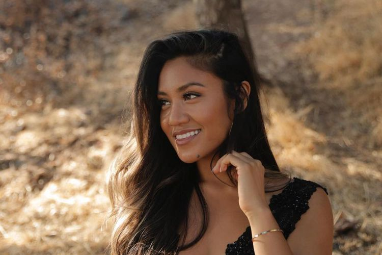

3 Fakta Maharasyi Hansa, Penyanyi Indonesia di The Voice Amerika
ANDI MUTTYA KETENG PANGERANG
KabarKabur.com -27/09/2017, 17:05 WIB

Penyanyi asal Indonesia, Maharasyi, lolos di ajang pencarian bakat The Voice 13 di Amerika Serikat.(Instagram/Maharasyi).
KabarKabur.com - Maharasyi Hansa baru saja mencetak sejarah sebagai orang Indonesia pertama yang lolos blind audition ajang The Voice.
Ia berhasil membuat dua penyanyi kelas dunia, Jennifer Hudson dan Miley Cyrus, memutar kursi dan memintanya bergabung dalam tim mereka.
Bahkan, ia mendapat pujian dari Hudson serta coach The Voice lainnya, Adam Levine, karena menyanyikan lagu "Tell Me Something Good" yang dipopulerkan oleh Rufus dan Chaka Khan.
Bagi sebagian orang, Maharasyi adalah sosok yang masih asing. Namun siapa sangka ia bukanlah orang baru dalam industri musik Tanah Air.
KabarKabur.com pun merangkum beberapa fakta tentang Maharasyi, berikut daftarnya:
1. Keponakan Emilia Contessa
Dari penelusuran berbagai sumber, Maharasyi Hansa diketahui merupakan keponakan vokalis senior Emilia Contessa.
Ayah Maharasyi bernama Rio Rosano Hansa, adik kandung Emilia. Emilia juga pernah mengunggah fotonya bersama Maharasyi ke Instagram pada 14 Juli 2017 lalu.
Maharasyi pun berkomentar dan menyebut Emilia dengan panggilan "Bude", sebutan tante dalam bahasa Jawa. "Love you dearly bude cantik," tulis Maharasyi.
2. Teman Duet Daniel Mananta
Pada 2012 lalu, dari salah satu video dalam saluran YouTube Indonesian Idol, terlihat VJ Daniel Mananta berduet dengan Maharasyi.
Kala itu, di panggung ajang pencarian bakat tersebut, keduanya menyanyikan ulang lagu "Bendera" yang dipopulerkan oleh band Cokelat. Maharasyi membawakan bagian refrain, sementara Daniel bernyanyi rap.
3. Nyanyikan Lagu Melly Goeslaw
Saat baru meniti karier bermusik di Indonesia pada 2013 lalu, Maharasyi mendapatkan kesempatan menyanyikan lagu ciptaan penulis lagu kawakan Melly Goeslaw.
Maharasyi membawakan singel berjudul "Biarkan Cinta" yang menjadi lagu tema atau soundtrack film Wanita Tetap Wanita.
Itu diketahui dari video lirik dalam channel YouTube Melly Goeslaw yang diunggah empat tahun lalu.
"Biarkan Cinta" adalah lagu yang dibuat oleh Melly Goeslaw untuk OST Wanita Tetap Wanita. Dinyanyikan oleh pendatang baru Maharasyi.
Lagu ini bisa didapatkan di album Queen of Soundtrack," demikian keterangan video yang tertulis.
penulis :Andi Muttya Keteng Pangerang
Editor :Kistyarini